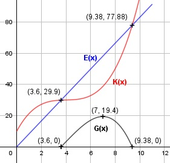

Aufgabe 75 Eine Kostenfunktion 3. Grades hat einen Wendepunkt bei (4|30), und dort eine Steigung von 0,2. Die fixen Kosten betragen 10 GE. a) Berechnen Sie Gewinnschwelle und -grenze, wenn der Erlös 8,3 GE/ME beträgt. b) Wie hoch ist der maximale Gewinn G? a) x = Mengeneinheiten ME G(x) = E(x) - K(x) E(x) = 8,3 * x GE K(x) = Kv(x) + Kf K(x) = ax3 + bx2 + cx + d K'(x) = 3ax2 + 2bx + c K''(x) = 6ax + 2b Bedingungen: K(0) = 10 --> d = 10 K(4) = 30 --> 30 = a * 43 + b * 42 + c * 4 + 10 = 64a + 16b + 4c + 10 = 30 | -10 = 64a + 16b + 4c = 20 (1) K'(4) = 0,2 --> 3a * 42 + 2b * 4 + c = 48a + 8b + c = 0,2 (2) K''(4) = 0 --> 6a * 4 + 2b = 24a + 2b = 0 (3) (1) + (2) * (-4) 64a + 16b + 4c = 20 -192a - 32b - 4c = -0,8 ------------------------ -128a - 16b = 19,2 (4) (4) + (3) * (8) -128a - 16b = 19,2 192a + 16b = 0 ------------------------ 64a = 19,2 |:64 = 0,3 In (3) eingesetzt: 24 * 0,3 + 2b = 0 -7,2 2b = -7,2 |:2 b = -3,6 In (1) eingesetzt: 64 * 0,3 + 16 * (-3,6) + 4c = 20 19,2 - 57,6 + 4c = 20 |+38,4 4c = 58,4 | :4 c = 14,6 K(x) = 0,3x3 - 3,6x2 + 14,6x + 10 G(x) = 8,3x - (0,3x3 - 3,6x2 + 14,6x + 10) G(x) = - 0,3x3 + 3,6x2 - 6,3x - 10 G'(x) = - 0,9x2 + 7,2x - 6,3 G'(x) = - 1,8x + 7,2 G(x) = 0 Am Graphen ungefähr abgelesen: x1 = 3,6, x2 = 9,4 Näherungsverfahren von Newton: G(x0) x1 = x0 - ------ G'(x0) 0,0208 x1' = 3,6 - -------- = 3,6 ME = Gewinnschwelle 7,956 -0,2992 x2' = 9,4 - ---------- = 9,38 ME = Gewinngrenze -18,144 b) G'(x) = - 0,9x2 + 7,2x - 6,3 G''(x) = - 1,8x + 7,2 A, B, C - Formel: A = -0,9, B = 7,2, C = -6,3 x1,2 = x1,2 = x1,2 = -7,2 ± 5,4 x1,2 = ------------ -1,8 x1 = 1 x2 = 7, G(7) = 19,4 G''(1) = -1,8 * 1 + 7,2 > 0 --> Tiefpunkt G''(7) = -1,8 * 7 + 7,2 < 0 --> Hochpunkt (7 ME|19,4 GE) Bei einem Verkauf von 7 ME erzielt der Betrieb den Höchstgewinn von 19,4 GE.
